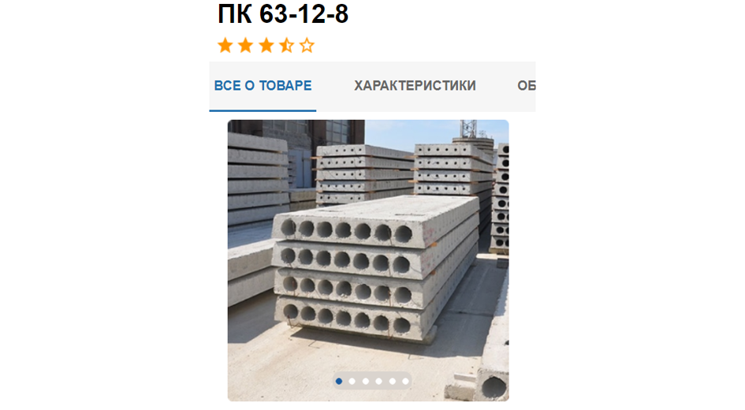
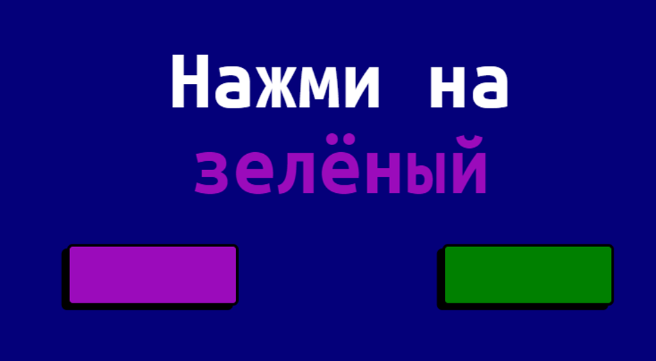

ДСК СтолицаТестовое задание для компании ДСК Столица. Макет был представлен в формате jpgHTMLCSSSassНа сайт!В репозиторий!
Седона V2.0Вторая версия сайт туристического городка. Есть адаптивная версияHTMLCSSLessgulpНа сайт!В репозиторий!
Тест СтрупаВеб-версия методики для оценки внимания - тест СтрупаHTMLCSSSassJSgulpНа сайт!В репозиторий!